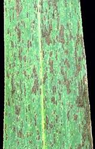
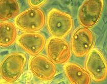

SUGARCANE :: MAJOR DISEASE :: RUST
Rust - Puccinia erianthi (Syn: P. melanocephalaand
P. kuehnii)
Symptoms
| Minute, elongated, yellow spots (uredia), usually 2-10 x 1-3 mm appear on both the surfaces of young leaves. The pustules turn to brown on maturity. Late in the season, dark brown to black telia appear on the lower surface of leaves. In severse cases, the uredia also appear on the leaf sheath and the entire foliage looks brownish from a distance. |
 |
Rust Video
|  | Pathogen: The mycelium is hyaline, branched and septate. P.kuehnii produces ovoid or pear shaped, single celled uredospores measuring 29-57 x 8-37µm with apical thickening and golden yellow in colour. Teliospores are produced in scanty which are yellow in colour, club shaped, two celled, smooth walled and measuring 24- 34 X 18-25µm single celled, dark yellow coloured with 4 equatorial pores. |
Uredospores |
|
Teliospores are produced in abundance, which are pale to brick colour, two celled, smooth walled and slightly constricted at septum. Occurrence of pycnial and aecial stages and the role of alternate host are unknown.
Favourable Conditions
- Temperature of 30˚C.
- Rumidity between 70 and 90 per cent.
- High wind velocity and continuous cloudiness.
Disease Cycle
The fungus survives on collateral hosts like Erianthus fulvus and Saccharum spontaneum. The uredospores also survive in the infected stubbles in the soil. The disease is mainly spread through air-borne uredospores.
Management
- Remove the collateral hosts.
- Spray Tridemorph 1 kg or Mancozeb 2 kg/ha.